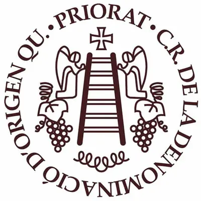
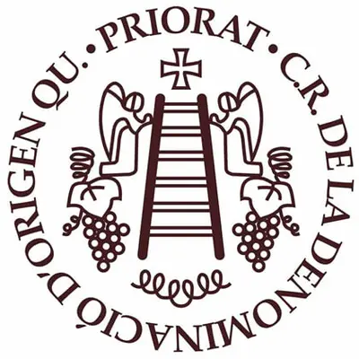

CELLER AIXALÁ I ALCAIT
The Aixalà i Alcait winery, located in Torroja del Priorat, in the heart of the DOQ Priorat, has been making wines since 2005, exclusively from grapes grown in their own vineyards. Although the family has been cultivating vineyards since the 1980s, it was not until 2005 that they began to make wine. Since then, the winery has kept alive the enthusiasm that gave birth to their project, guided by respect for the land, tradition and the unique character of this region.
The Priorat, with its slopes of slate soil (llicorella) and unique climate, allows wines with personality to be made, rooted in a landscape where time seems to stand still.
Committed from the beginning to the environment, Aixalà i Alcait has been committed to organic farming since 2008 and has implemented multiple sustainable measures in its activity. These include the use of boxes without adhesive tapes to reduce plastic waste, as well as capsules and labels that are less aggressive towards the environment. This local commitment to the planet is based on the conviction that small actions are also important. The winery believes that caring for the land one loves is a way of protecting ecosystems beyond the Priorat, a region that has overcome difficult times and today represents a model of respect and effort.
 
